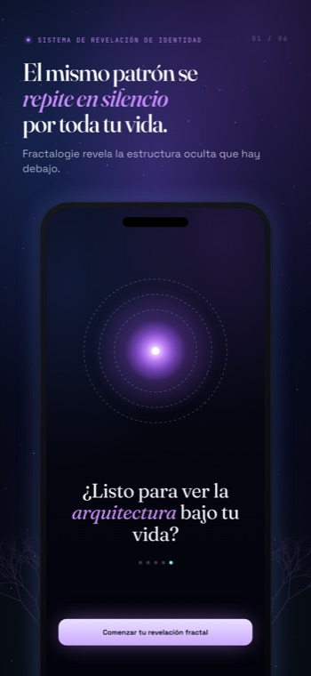

Una idea silenciosa subyace a todo lo que hace Fractalogie: las situaciones que siguen regresando no son accidentes de las circunstancias. Son la superficie visible de una estructura — y una estructura se puede ver.
La repetición es estructural, no aleatoria. Cuando la misma discusión, la misma huida, el mismo silencio siguen apareciendo — con personas distintas, años distintos, vidas distintas — eso no es mala suerte acumulándose. Es un sistema haciendo exactamente aquello para lo que fue construido.
Un patrón que se repite con tanta fiabilidad no es un fallo de la máquina. Es la máquina. La escena regresa porque regresar mantiene algo intacto.
Nada que hagas dos veces carece de sentido. Cada patrón preserva la estabilidad y minimiza la exposición emocional — gasta la menor energía posible para mantenerte a salvo de un sentimiento que preferirías no afrontar de frente.
Por eso los patrones son tan difíciles de «simplemente dejar». No son errores que corregir. Son soluciones elegantes a un problema que quizá nunca llegaste a nombrar — soluciones que funcionan, a un precio.

La misma estructura aparece en tus relaciones, tu dinero, tu cuerpo, tu trabajo, tu sentido de quién eres. Aléjate de una y encontrarás su gemela en otra parte — el mismo bucle con otro disfraz.
Esto es el fractal: no muchos problemas separados, sino una sola estructura que resuena en cada escala de una vida. Resuélvela como cinco problemas y vuelve a crecer. Velo como una sola forma y por fin se queda quieta.
La identidad se comporta como un atractor: un centro de gravedad que devuelve los acontecimientos a una órbita familiar. Sea lo que sea que hayas decidido que eres, la realidad se sigue ordenando para confirmarlo — porque ser coherente se siente más seguro que ser libre.
La consciencia desestabiliza los patrones. En el momento en que un bucle se ve con claridad — su detonante, su reacción, la emoción que guarda, el precio que cobra — pierde parte de su agarre automático. No puedes ejecutar el mismo programa exactamente igual una vez que lo has visto correr.
Pero seamos honestos sobre el límite: entender no es transformar. La revelación no es una cura. Nombrar la estructura es el comienzo, no el final — es lo que hace posible el cambio, no lo que lo garantiza.
Fractalogie no te motiva. No moraliza, no prescribe afirmaciones ni te entrega un plan de cinco pasos. No hay una voz de autoayuda diciéndote que pienses en positivo o que te esfuerces más.
Refleja — con precisión, con paciencia, un hilo cada vez — hasta que la estructura que hay debajo se hace visible para ti. Un espejo no te dice qué hacer con lo que ves. Simplemente se niega a apartar la mirada primero.
Todo lo anterior, destilado en los principios que la app sigue en cada escaneo.
No los problemas que produce. Los problemas son el resultado; tú eres el sistema.
La escena regresa porque regresar protege algo que aún no has nombrado.
Preserva la estabilidad y minimiza la exposición — una solución elegante, a un costo.
El mismo bucle se repite en el amor, el dinero, el cuerpo, el trabajo y la identidad.
La consciencia precisa desestabiliza el bucle — aunque entender aún no es transformar.
Fractalogie es una herramienta de autorreflexión. No es terapia, ni tratamiento médico o psicológico, ni consejo profesional de ningún tipo. No diagnostica, trata ni cura nada, y no sustituye a un profesional cualificado.
Tampoco es un servicio de crisis. Si estás pasando por un momento de angustia, te cuesta tu salud mental o piensas en hacerte daño, por favor no te apoyes en una app — acude a un profesional cualificado, a alguien de confianza o a los servicios de emergencia de tu zona de inmediato.
Lo que Fractalogie ofrece es un espejo claro y sereno. Lo que elijas hacer con lo que refleja es tuyo, y solo tuyo.
Nombra una situación que se repite, describe un único momento de ella, y observa cómo emerge la forma que hay debajo. Tu primer escaneo es gratis — sin cuenta, sin rastreo.